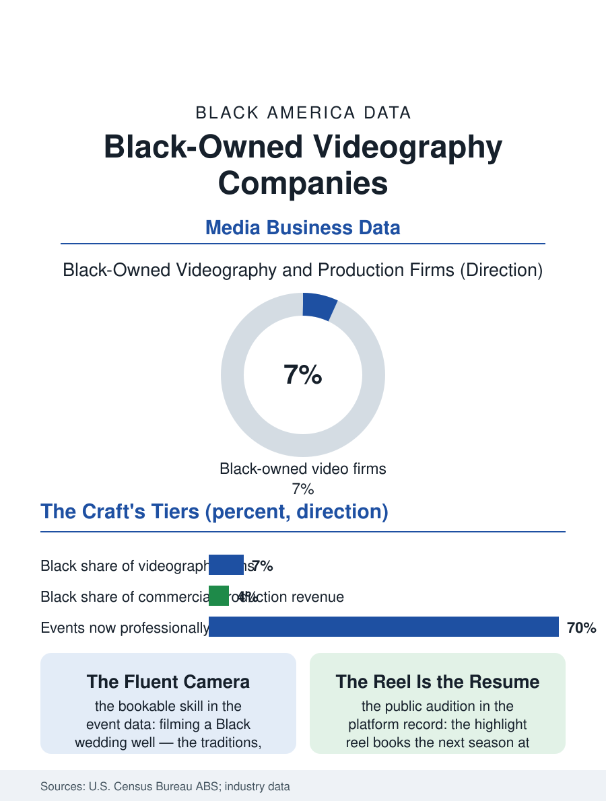

Black Business
The Reel Is the Resume: Black-Owned Videography Companies
Videography's portfolio is public and its craft is auditable, and Black production companies climb from weddings and church media toward owned libraries. The videography file.

Every wedding, corporate launch, church anniversary, and funeral in America is now filmed, and the videography business, once a camcorder sideline, professionalized into a craft industry of cinema cameras, drones, and same-day edits. Black-owned videography and video production companies operate across its tiers, from the solo wedding shooter to the commercial production house, in a market where the portfolio is public and the referral is the algorithm. This article reads the videography file.
The Wedding Economy and the Craft Ladder
Weddings are the industry's training ground and cash engine: an event market measured in the tens of billions nationally, in which videography attaches to the same budgets this atlas's event business file counts, and in which Black couples' celebrations, the church weddings, the fraternity and sorority traditions, the second-line and jumping-the-broom details a shooter must know to film well, constitute a specialty market where cultural fluency is a bookable skill. The solo operator's economics are the service file's classic: gear as capital, weekends as inventory, and the highlight reel as the marketing asset that books the next season. The ladder climbs through the corporate tier, brand films, training and conference coverage, real estate and music video work, toward the commercial production company with its crews, stages, and agency relationships, and the rungs sort by network as much as by craft, since agency producers hire the directors and shooters they already trust with a client's money. The Black production houses in the industry record have built their ladders deliberately: music videos and church media as the craft apprenticeship, the Black media companies and streaming platforms' content boom as the client base, and the Atlanta production ecosystem, where Black ownership reaches from studios to equipment rental, as the geographic proof that an alternative ladder can be built whole.
Platforms, Gear, and the Democratized Camera
Technology repriced the craft twice in a generation. The first repricing put cinema-quality cameras in solo hands, collapsing the capital distance between the wedding shooter and the production house, and the portfolio platforms, the reel on social media, made skill visible at zero distribution cost, the closest thing in the creative economy to the welder's fair test in this atlas. The second repricing is the phone: clients' own devices cover the casual tier, pushing professional value toward the produced tiers, narrative, lighting, sound, the things a phone cannot fake, and toward live production, the streamed service, conference, and funeral, a segment whose growth through the pandemic years permanently enlarged the market and in which Black churches, streaming their services with production values their media teams built, were early and sophisticated adopters. Gear access remains a live variable: the rental houses and the ownership of the high-end camera and lighting packages sort the commercial tier, and cooperatives and rental businesses inside the Black production community function as the segment's shared capital, another instance of the community solving collectively what credit markets solve individually elsewhere. The drone layer added a federal license to the craft, the FAA's commercial certification, one more auditable test that the file notes approvingly.
The Storyteller's Market
The forward file is the content economy's insatiable middle: brands, campaigns, churches, universities, and platforms all buying produced video continuously, with the short-form economy rewarding exactly the shooter-editor hybrid the wedding apprenticeship produces. The ownership question tracks the industry's value migration: the shooter sells days, the production company sells projects, and the company that owns formats, recurring series, faith and lifestyle programming for the streaming niches, sells a library, the only asset in the file that compounds while its owner sleeps. Black production companies are present at each level, and the streamers' documented appetite for Black audience content gives the library strategy a buyer the previous generation lacked, though the terms of those purchases, the licensing data elsewhere in the media file, decide whether ownership accumulates or merely rents. The videography file closes on the highlight reel's three minutes, where the whole craft announces itself to the next client. Few industries let a small firm's best work advertise itself this completely, which is why this file reads more hopefully than most: the audition is the product, the product is public, and the Black shooters and houses who mastered the form in the church and wedding economy now hold portfolios the brand economy is learning to price at their worth.
More in Black Business
Black-Owned Businesses: Counts, Receipts, and the Representation Gap
About 161,000 Black-owned employer firms and three million solo ventures: how the Census Bureau counts Black business ownership, where firms concentrate, and the gap between population share and business share.
Black Median Net Worth: The Wealth Gap in Federal Reserve Data
The Federal Reserve puts Black median family net worth at $44,900, against $285,000 for White families — about 16 cents on the dollar. The widest gap in economic data.
Black Buying Power: The $1.8 Trillion Consumer Economy
Black buying power is estimated at about $1.8 trillion — larger than the economy of most nations. What the figure measures, who produces it, and what it buys.
Source: U.S. Census Bureau, Annual Business Survey (NAICS 51211); wedding and event industry reports; media production sector data.